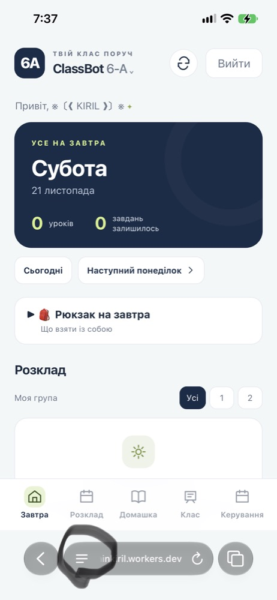
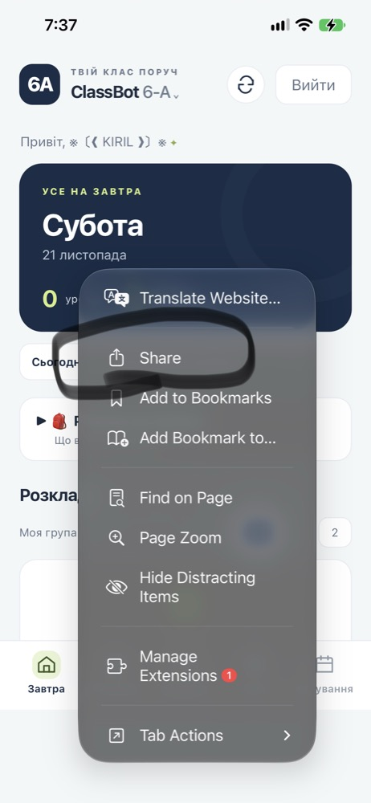
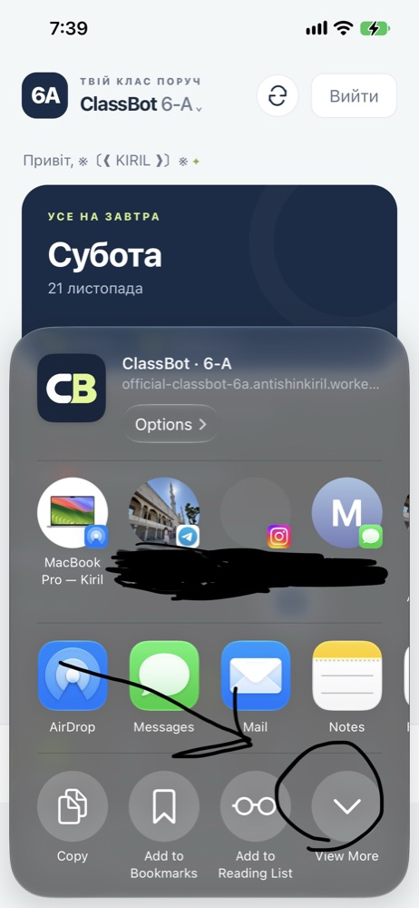
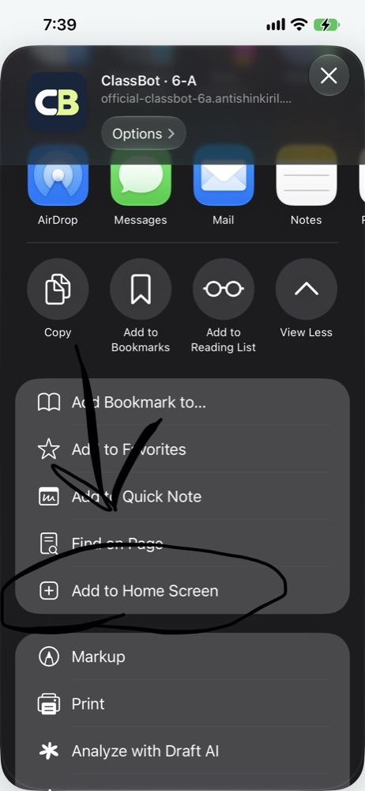
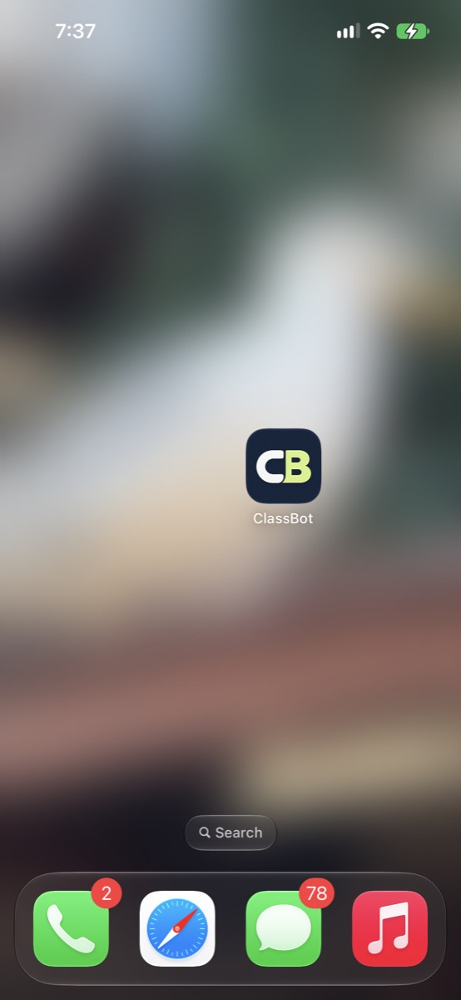

Ваш клас.
Одне натискання.
Додайте ClassBot на головний екран телефона, щоб швидко відкривати розклад, домашку й рюкзак.
Відкрити ClassBot ↗На iPhone
П’ять кроків на справжніх знімках. Натисніть фото, щоб відкрити його більшим.

Відкрийте меню Safari
Відкрийте ClassBot у Safari та увійдіть. Унизу, ліворуч від адреси, натисніть кнопку меню, обведену на знімку.

Натисніть Share
У меню оберіть Share — «Поширити». Відкриється панель із діями для сторінки.

Розгорніть усі дії
Натисніть View More зі стрілкою вниз у правому нижньому куті панелі.

Додайте на початковий екран
Оберіть Add to Home Screen — «На початковий екран». У наступному вікні залиште назву ClassBot, увімкніть Open as Web App, якщо цей перемикач є, і натисніть Add / «Додати».

Готово — ClassBot поруч
На початковому екрані з’явиться іконка CB. Натисніть її, щоб відкрити свій клас. Якщо сайт попросить увійти, підтвердьте вхід у Telegram та поверніться до ClassBot з цієї іконки.
На знімках меню англійською. В іншому вигляді Safari кнопка «Поширити» може бути одразу на панелі. Довідка Apple
На Android
Використовуйте Chrome. Назви пунктів можуть трохи відрізнятися залежно від версії браузера.
Відкрийте сайт
Запустіть Chrome та відкрийте ClassBot.
Відкрийте меню
Натисніть три крапки праворуч від адресного рядка.
Створіть ярлик
Оберіть «Установити й створити ярлик» → «Створити ярлик». В іншій версії Chrome пункт називається «Додати на головний екран».
Підтвердьте додавання
Залиште назву ClassBot і натисніть «Додати». Якщо телефон попросить ще одне підтвердження, підтвердьте його. Іконка відкриватиме сайт у Chrome.
Кроки перевірено за офіційною довідкою Google Chrome.